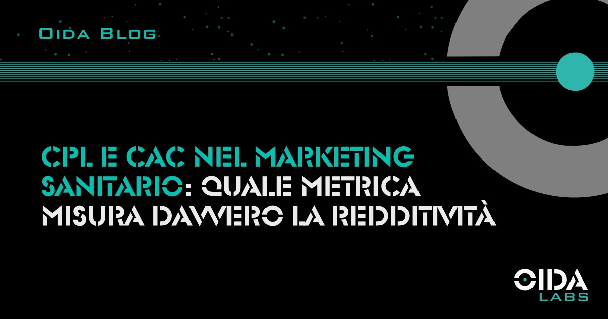

← Tutti gli articoliCPL e CAC nel marketing sanitario: quale metrica misura davvero la redditività
Nel marketing sanitario il CPL misura il costo del lead, il CAC misura il costo per paziente acquisito. La differenza tra i due numeri determina la redditività reale.
Nel marketing sanitario la scelta della metrica di riferimento condiziona ogni decisione successiva: budget, allocazione dei canali, valutazione dell’agenzia, dimensionamento del team commerciale interno. Il CPL e il CAC raccontano due cose diverse, e confonderli porta a conclusioni economicamente fragili.
- Cosa misura il CPL e perché non basta
- Cosa misura il CAC e come si calcola
- Il gap tra le due metriche: un caso reale
- Da cosa dipende il CAC
- Come impostare una misurazione operativa
- FAQ
Cosa misura il CPL e perché non basta
Il cost per lead indica quanto costa generare un contatto qualificato — una richiesta di informazioni, una compilazione di form, una chiamata in arrivo da canale digitale. È una metrica utile per valutare l’efficienza della campagna pubblicitaria in sé: quanto efficacemente il budget produce contatti.
Il limite del CPL è che si ferma al click. Non dice nulla sul fatto che il lead abbia risposto al richiamo, sia arrivato all’appuntamento, si sia presentato in studio, abbia svolto la visita. Una struttura che ragiona solo sul CPL ottimizza una parte del funnel e lascia scoperta la parte che effettivamente determina il fatturato.
In un settore come quello sanitario, dove il tasso di conversione lead-paziente varia in modo significativo tra specialità — dalla fisioterapia alla cardiologia passando per la chirurgia estetica — il CPL da solo non è sufficiente a orientare le scelte di investimento.
Cosa misura il CAC e come si calcola
Il customer acquisition cost, applicato alla sanità, rappresenta il costo effettivo per portare un paziente a svolgere la prima visita. Si ottiene dividendo il totale investito — budget pubblicitario più costi di gestione — per il numero di pazienti effettivamente acquisiti nel periodo considerato.
Il calcolo richiede un tracciamento esteso lungo l’intero funnel. Servono quattro dati:
- Numero di lead generati dalla campagna
- Numero di lead che rispondono al primo contatto di follow-up
- Numero di appuntamenti fissati
- Numero di pazienti che si presentano e svolgono la visita
Ciascun passaggio ha un tasso di conversione proprio, e ogni percentuale che si perde incide in modo cumulativo sul costo finale.
Una struttura con un investimento mensile di €5.000 che genera cento lead ottiene un CPL di €50. Se risponde efficacemente al 60% dei lead, fissa appuntamenti per il 70% di quelli raggiunti e registra un tasso di show del 75%, i pazienti effettivi sono trentuno. Il CAC reale è circa €161. La campagna non è cambiata: è cambiato ciò che si misura.
Il gap tra le due metriche: un caso reale
In un progetto di marketing sanitario seguito da OIDA Labs, una struttura con un investimento pubblicitario di €8.000 mensili registrava un CPL dichiarato di €67 — un risultato tecnicamente solido. Il calcolo del CAC reale, esteso all’intero percorso dal click alla visita effettuata, portava il costo per paziente acquisito a €470.
La differenza non era imputabile alla qualità delle campagne. La generazione dei lead era ben tarata per targeting e creatività. Il divario emergeva nel processo a valle: tempi di risposta lunghi, assenza di script strutturati per il richiamo, tassi di no-show non monitorati, nessuna sequenza di reminder automatizzata per gli appuntamenti fissati. Ogni anello del funnel perdeva una quota di contatti che, cumulata, moltiplicava per sette il costo finale.
La correzione non ha richiesto di aumentare il budget pubblicitario. Ha richiesto di intervenire sul processo di gestione dei lead: introduzione di un CRM operativo, definizione di un protocollo di risposta entro trenta minuti, sequenze di reminder automatiche per gli appuntamenti, tracciamento del tasso di show. Nei tre mesi successivi, il CAC reale si è ridotto in modo significativo a parità di investimento.
Da cosa dipende il CAC
Il CAC non dipende unicamente dall’attività pubblicitaria. Sono quattro i fattori che lo determinano, e tre di questi sono interni alla struttura sanitaria.
La qualità della campagna determina il volume e la pertinenza dei lead in ingresso. È la parte gestita dall’agenzia e può essere ottimizzata attraverso targeting, creatività e landing page dedicate.
La velocità di risposta incide direttamente sul tasso di conversione. Studi sul lead management mostrano che contattare un lead entro i primi cinque minuti aumenta di un ordine di grandezza la probabilità di conversione rispetto a un contatto effettuato dopo trenta minuti. Automatizzare questo processo con strumenti AI è oggi uno dei modi più efficaci per comprimere i tempi.
La qualità della conversazione commerciale condiziona il passaggio da interesse a appuntamento. Uno script strutturato, la capacità di gestire le obiezioni più frequenti, la conoscenza clinica di base necessaria a orientare il paziente fanno la differenza sul tasso di fissazione.
La gestione degli appuntamenti influenza il tasso di show. Reminder automatici, conferme attive il giorno prima, politiche chiare sulle disdette sono gli strumenti che riducono i no-show.
Ottimizzare il CAC significa presidiare tutti e quattro questi fattori in modo coordinato.
Come impostare una misurazione operativa
Il primo passaggio è rendere tracciabile l’intero percorso. Ogni lead deve essere associato a una fonte riconoscibile — campagna, canale, creatività — e seguito fino all’esito finale. Un CRM anche minimo è sufficiente, purché venga effettivamente aggiornato.
Il secondo passaggio consiste nel definire i tassi di conversione di riferimento. I benchmark variano tra specialità, ma calcolare il proprio storico consente di identificare in quale fase del funnel la struttura perde più valore.
Il terzo passaggio è la revisione mensile. I numeri vanno letti insieme all’agenzia, al responsabile delle campagne interno e al personale di front-office. Le decisioni di ottimizzazione — alzare o ridurre il budget, cambiare creatività, modificare lo script di richiamo — si prendono sui dati, non sulle impressioni.
Sintesi
Il CPL indica l’efficienza della campagna pubblicitaria; il CAC indica la redditività dell’investimento nel suo insieme. Misurare solo il primo fornisce una visione parziale del funnel sanitario. Misurare il secondo richiede tracciamento disciplinato e collaborazione tra agenzia e struttura. La capacità di lavorare in questo modo è uno dei criteri che distinguono un’agenzia di marketing sanitario attrezzata da una generalista.
FAQ
Qual è un CAC di riferimento nel marketing sanitario?
Il benchmark varia per specialità e per ticket medio del servizio. Per visite a basso commitment economico — fisioterapia, dermatologia di base — il CAC sostenibile si colloca tipicamente tra €30 e €80. Per specialità a ticket elevato — chirurgia estetica, odontoiatria implantologica, bariatrica — il CAC può essere sostenibile anche oltre €300–400, purché il lifetime value del paziente giustifichi l’investimento.
Ogni quanto tempo va ricalcolato il CAC?
Su base mensile per l’operatività, su base trimestrale per le decisioni strategiche. Finestre più brevi risentono della volatilità settimanale; finestre più lunghe fanno perdere reattività sulle correzioni.
Chi deve avere visibilità sul CAC in una struttura sanitaria?
Almeno tre figure: il referente marketing (interno o esterno), il responsabile dell’agenda e del front-office, la direzione. La metrica attraversa competenze diverse ed è efficace solo se letta in modo coordinato.
Fonti: Dati interni OIDA Labs (analisi su campagne di marketing sanitario gestite 2023–2025), MIT Sloan / InsideSales.com Lead Response Management Study, Harvard Business Review The Short Life of Online Sales Leads (2011).